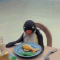

야식폭식으로인해 남극대륙이 가라앉고 있다
댓글
잔잔하게 돌았네 이거
이런거 왠지 좋다
반찬이 독자적인 문명을 구축했어요 하루만 늦었어도 투표권을 달라고 했을 겁니다
머하는 만화야
좋다 ㅋㅋㅋㅋㅋㅋ
팽귄류 쿨타임 돌긴 했어
모리토 인스타툰https://www.instagram.com/morito_toon?stkn=MTV4MTM2eXdoMnp2YQ==

의식의 흐름 화법 어지럽네 ㅋㅋㅋㅋ
귀엽네 ㅋㅋ
세금십ㅋㅋㅋ
ㅋㅋㅋㅋㅋㅋ
재밌네ㅋㅋ
ㅋㅋㅋㅋㅋㅋㅋ
ㄱㅇㅇ
저사람 만화 개잘그림
뭔 만화야 이거 ㅋㅋㅋㅋㅋ